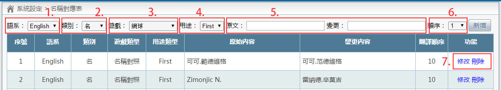
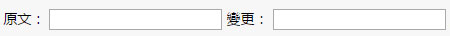

介面說明

介面說明
- 語系：
選擇想要翻譯的語系，如要翻譯英翻中可選擇【English】，日翻中可選擇【日本の】
- 類別：
選擇要翻譯的內文，為遊戲內容或是選手的姓或名
一般如果【姓名】不做分類的話一律放至【名】的類別內
- 遊戲：
選擇要翻譯的遊戲名稱
- 用途：
除隊伍以外翻譯皆選擇【內容】
- 原文，變更：
在【原文】內填入需翻譯文字，【變更】內填入翻譯後的文字

- 順序：
翻譯順序說明，數字越小翻譯順序越優先 (此順序非翻譯速度)
如果人名無此疑慮便可直接使用預設順序，無須刻意填寫翻譯順序
- 修改與刪除：
點擊修改，會於上方新增資料，出現修改資訊，修改內容，並點擊【修改】便可修改成功若不做任何變動，點擊取消即可